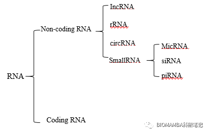

测序技术的发展与应用
原文：https://mp.weixin.qq.com/s?__biz=MzAwMzIzOTk5OQ==&mid=2247495792&idx=2&sn=1aecc80b68f65f8a44a899df524038c0&chksm=9b3c8920ac4b0036b23268331b457a335b22b4fa3aed1db287ab79e7a4613df8d195bd11421a#rd 合集：单细胞教程全收录 / 文献速递
本科的时候写过一个小作业，虽然水平和价值不高，但对初学者来说应该是一个了解高通量测序技术的好方式：
摘要：随着分子生物学的不断发展，各种测序和分析技术不断被更新与改良，1977年Sanger发明的双脱氧链终止法作为第一代测序技术打开了核酸测序的大门，将基因测序带入了自动化时代；随后以微阵列（DNA microarray）、基因表达系列分析（Serial Analysis of Gene Expression，SAGE）、Roche/454和Illumina等为首的二代测序技术使测序技术变得更加成熟，对生物基因领域的科研拥有了更加有力的基础。并且由于测序水平的日益提高，以纳米孔单分子测序为代表的第三代测序技术也开始发展。随着二代和三代测序技术的兴起，测序技术逐步形成高通量、短时长、低成本的特点。因此，分子生物学的研究已经不仅仅局限于模式植物，药用植物基因挖掘方面的研究也随之兴起，后基因组时代已经到来。而本文所探讨的是RNA-Seq（RNA-sequencing）技术。我们将从测序技术、分析方法、实际应用等实例具体讨论这一主题。
关键词：RNA-Seq、药用植物、多态性分析、Non-coding RNA
1、测序技术的发展 本文旨在介绍RNA-Seq技术在植物基因挖掘方面的应用，而其发展依赖于各种测序技术的发展，因此，我们首先简单介绍一下各类测序技术及其发展与特点。
1.1 第一代测序技术
第一代测序技术包括Sanger双脱氧核苷酸末端终止法和Alan Maxam与Walter Gilber发明的化学降解法[1]。第一代测序使核酸分子的测序自动化成为了可能，在1977年，第一代测序技术“高达”1000 bp的测序长度以及99.99 %的准确率无疑为分子生物学研究提供了先进工具。在很长一段时间内，拥有着读长长、高灵敏度、高准确率的优势，值得一提的是，在人类基因组计划的初始阶段，用的便是这一技术。但是随着技术的不断革新与对于测序要求的提高，该法的通量不足、灵敏度与分辨率过低、操作复杂（需要预知部分序列设计引物或连接测序接头）、成本高（1300美元/Mb）、耗时长等缺点逐渐显现出来[2]，逐渐被后续兴起的第二代测序技术(Next-Generation Sequencing, NGS)所替代，但是由于第一带测序技术拥有准确率高、读长长、无需拼接的特点。因此在某些研究领域还有一定的应用价值。如质粒测序、突变位点验证、小型细菌基因组测序、细菌人工染色体末端测序、重复序列测序等方面。
1.2 第二代测序技术
随着现代分子生物学的不断发展，以Sanger技术为主流的第一代测序技术已经不能够满足各方学者的研究需求。2005年Roche公司推出的454测序平台拉开了第二代测序技术的大幕，这一技术奠定了第二代测序技术的基础，对测序技术的发展具有里程碑式的意义[3]。
对于上文提到的第一代测序技术的缺点，454测序技术完美的避开了这些弊端，不仅如第一代测序技术那样拥有准确性高的特点，并且革命性的做到了高通量（平均通量可达0.5G）、低成本、时间短的特点。但是，由于454测序技术的运行结果需要进行拼接，在对于核苷酸结构重复或者重复序列较多的序列进行测序时，Sanger测序法则更为适宜[4]。比如一些卫星DNA、端粒DNA的测序，用454测序技术是不适合的。并且由于其边合成边测序的方法，导致其测序的灵敏度极高。
在基因芯片迅速发展的时期，Illumina公司的Solexa测序随之兴起，并迅速运用到动植物与微生物测序之中。其与454测序技术一样，是一种边合成边测序的技术，其优势为不需要合成探针、不需要知道模式物种的基因组序列，因而简化了流程。另一方面，该技术利用了集成芯片，在准备过程中将DNA分子与特定的引物连接，使其与芯片特异性结合，得到了“单克隆”的DNA，因此也具有高通量（平均通量可达30G）、高灵敏度、高准确性的特点[5]。该方法的通量明显高于454测序技术，这也使其成为了第二代测序技术的主力军。
Solid（Supported Oligo Ligation Detetion）测序技术是ABI公司研发的一种不同于以上两种测序方法的技术，根本区别在于Solid技术的核心为连接而非PCR扩增。通过目的DNA与八碱基荧光探针的结合后经多轮测序得到目的序列。其避免了“合成”这一环节，即有效的避免了碱基互补配对过程中的错配现象，无疑为准确率的提高打下了基础。
1.3 第二代测序技术的简要流程
1.3.1 454测序技术的大体流程如下 样品片段化→挑选500~800 bp片段→在片段两端加上不同的接头→将带有接头的DNA片段与磁珠结合→将磁珠包裹在水包油的体系中→磁珠与反应板一一结合→将体系加入PTP板上→上机测序、依次加入4种碱基→检测信号、获得序列数据。
1.3.2 Solexa测序技术的大体流程 样品片段化→文库制备→使文库片段于含有引物的芯片上进行扩增→得到单克隆→加入4种荧光标记的dNTP与改造后的DNA聚合酶→统计收得的荧光信号→获得序列数据。
1.3.3 Solid测序技术的大体流程 样品片段化→在片段两端加上接头→PCR、微珠富集→磁珠沉积→接头与模板上特异接头序列杂交→四色荧光标记的双碱基探针与样品连接→检测荧光信号→获得序列数据。
基于以上描述，我们对3种第二代测序技术及Sanger测序技术的特点进行了对比，如表1所示，对第二代测序技术进行了横向对比，如表2所示。可以发现，较第一代的Sanger测序而言，第二代测序技术均具有高通量、准确率高、成本低的特点[5-6]。
表1 测序技术比较
| 技术 | 原理 | 测序方式 | 读长 | 准确率 | 错误类型 | 成本（$/Mb） | 通量 | 载体 |
|---|---|---|---|---|---|---|---|---|
| 454 | 焦磷酸 | 边合成边测序 | 500 bp | 99 % | 插入、缺失 | 90 | 250~400 Mb | 磁珠 |
| Solexa | 荧光 | 边合成边测序 | 100 bp | 98.99 % | 替换 | 4 | 3~6 GB | 玻片 |
| Solid | 荧光 | 连接测序 | 50 bp | 99.94 % | 替换 | 0.3 | 30 GB | 玻片 |
| Sanger | 放射性 | 边合成边测序 | 1000 bp | 99.99 % | 替换 | 1300 | 1 Mb | PAGE |
表2 三种二代测序技术比较结果
| 测序技术 | 优点 | 缺点 |
|---|---|---|
| Roche/454 | 读取长度大、 | 低通量、高成本 |
| Solexa | 高通量、高准确率、低成本 | 读取长度较短、操作复杂 |
| Solid | 高通量、高准确率、低成本 | 读取长度较短、操作复杂 |
1.4 第三代测序技术
随着测序技术的不断更新，第三代技术也逐渐走向应用。其中的代表便为PacBio公司的SMRT（Single Molecule Real Time）技术与Oxford的蛋白纳米孔测序技术[7-8]。这一类的技术，仍然处于开发与完善阶段，例如，依赖于ZWT（Zero-mode waveguide technology）的SMRT技术的读长可以达到64.5 kb，高于第二代120~1200倍之多，但缺点是该测序方法的准确率只有85 %，一般需要结合二代测序以及优化软件分析来纠正这些错误，这无疑加大了测序方法的复杂性与运行结果处理分析的难度[9]，为其推广与应用带来了极大的障碍。值得欣喜的是，测序技术仍在不断发展，Visige公司正在开发一种新的技术，其目标为“三个一”，即用一天、1000美元的代价，做到对一个人的全基因组测序。可以预见的是，更快、更准确、读长更长、通量更高、成本更低的测序技术终将实现[10]。
以上三代测序技术为近年来基因组分析提供了技术支持，为基因组的研究与解析带来了可能，也使基因组发展迅速。第二代测序技术以成熟的体系、高通量、高灵敏度、高分辨率、低成本的特点，令各大实验室普遍可以接受该技术，并已得到了广泛的使用，因此第二代测序技术被广泛应用于RNA-Seq的工作与研究当中。
2 二代测序的实验步骤和应用
2.1 实验步骤
2.1.1 RNA的提取 RNA的提取对后续的逆转录以及测序十分关键，其纯度、含量、质量均会影响后期操作。其中，导致RNA提取失败的常见原因是蛋白酶污染，由于黏多糖和多元酚的理化性质与RNA存在一定的相似性，导致RNA与杂质分离不完全甚至造成沉淀[11]。因此，对于不同的植物通常需要优化并找到最适的RNA提取方法。目前常用的有：Trizol法、CTAB法、试剂盒法。通常，我们会根据药用植物的药用部位（如甘草选择根部、番泻叶的叶片）而选择不同的方法，如由于花瓣多含有黄酮类物质而呈一定的颜色，多用Trizol；提取药用植物根部RNA时多用快速RNA提取试剂盒法[12]。
2.1.2 逆转录 经琼脂糖凝胶电泳对RNA进行质量检测后，便可以对RNA进行逆转录的操作，常用逆转录试剂盒法进行该操作，详情可参考TaKaRa公司Reverse Transcriptase M-ML V （RNase H）反转录说明书进行。此后，可以将所获得的cDNA通过前文提到的几种二代测序平台进行测序，从而获得序列信息。
2.2.3 序列分析 在上文中我们已经提到，由于测序技术的发展，目前生物测序的通量极高，所反馈得到的数据通常为数个GB或数十个GB（一般情况下所获得的序列信息以FASTA或者FASTQ的格式保存）[13]，这样巨大而又复杂的数据通过人为筛选显然是不现实的，因此研究人员一般借助一些分析软件辅助处理数据，如DNAStar（Lasergene Version 7.1）、Gene Runner（Version 3.00）、NetNGlyc 1.0 Server等软件进行分析。一般经软件分析后通过归一化法与读段数据库进行比对，计算出基因的读段数目，从而计算出目标基因的表达丰度[14]。而目前的转录本功能注释中，还会考虑到剪切异构体的存在，这无疑使数据分析的结果更加可靠[15]。接下来，本文将从应用实例中，具体介绍RNA-Seq的应用与成果。
2.2 二代测序的应用 本文将从检测新的转录本、差异表达性分析、Non-coding RNA的研究及应用、不足与展望几个方面介绍RNA-Seq的应用。
2.2.1 检测新的转录本 作为RNA-Seq最基本的功能，使用该技术检测新的转录本已经在药用植物中得到了大量的应用。上文已经提到过几代测序技术的成本问题，由于全基因组测序的真核生物大多为人类、水稻、果蝇、酵母等模式生物，其花费了大量成本与人力，即使是测序成本急剧下降的今天，对于普通实验室来说也难以承担某一生物的全基因组测序，然而利用RNA-Seq对转录本测序以得到新的转录本无疑大大推动了非模式植物的研究。相较于动物与微生物而言，植物转录本的测序种类仍处于劣势地位，但随着对药用植物基因的挖掘，药用植物的转录本测序也渐渐的被摆上了各种平台[16]，近年来利用RNA-Seq技术得到的药用植物转录本如表3[18-22]所示：
表3 部分已测序植物转录本
| 物种 | 测序平台 | 测序年份 |
|---|---|---|
| 黄花蒿 | FLX | 2009 |
| 丹参 | FLX Titanium | 2010 |
| 西洋参 | FLX Titanium | 2010 |
| 淫羊藿 | FLX | 2010 |
| 紫衫 | FLX Titanium | 2011 |
| 贯叶连翘 | HiSeqTM2000 | 2012 |
| 红花 | HiSeqTM2000 | 2012 |
| 胡黄连 | GA IIx | 2012 |
| 亚麻芥 | Roche/454 | 2013 |
| 远志 | Solid | 2014 |
| 银杏 | Illumina | 2015 |
| 岩穴蕨 | Illumina | 2016 |
| 凤丹 | Illumina | 2017 |
| 冬凌草 | Illumina | 2018 |
获得新的转录本是转录组研究的基础，通过结合基因组和基因注释数据库，对基因功能做出注释，继而对转录调控过程中的选择性剪切（alternative splicing）和结构性变异（structural variation）做更深入的研究。对于无参考基因组的生物，可以通过从头组装的方式获得转录组序列[18]。
陈士林、孙永巧[17]等人采用改良的Trizol法从西洋参的根中提取了总RNA，并依据反馈数据建立了cDNA文库。经基因表达序列标签（expressed Sequence tags，ESTs）的拼接及注释后，获得了新的转录本（917个基因中的433个unigenes与Genbank中未知功能序列具有同源性），与NCBI的数据库进行对比，对其中的697个基因进行了注释。该组人员将700个unigenes聚类分析后依据生物学过程初步分为九类（细胞器部分、酶调节因子活性、翻译调节因子活性、应激反应等）。在进一步的功能鉴定中，还进一步获得了6个与生长素相关的基因、7个与水分胁迫相关的基因、2个受伤诱导的基因等，该课题对西洋参基因功能注释、转录调控均做出了大量的贡献 。
迟宇辰[17]利用RNA-Seq技术，获得了肉苁蓉的转录本，在分析与整理后获得了约2.23*10^5条基因并证明了肉苁蓉与梭梭之间存在着信息交换甚至RNA的转移，初步筛选出肉苁蓉转移至梭梭的基因454条，梭梭转移至肉苁蓉的基因5016条。其获得序列信息并注释的这些基因可以为其他学者对于肉苁蓉及梭梭的研究提供大量的资料。
从中，我们不难看出，作为进一步研究的基础，获得新转录本是目前转录组研究的前提，对于非模式生物转录本的测序或模式生物非经典状态（胁迫、诱变等）转录本的测序可以为其他研究提供宝贵的资料与基础。
2.2.2 差异表达与多态性分析 众所周知，RNA的转录反应了生物体的基因表达水平，质量高的RNA-Seq测序结果为研究人员提供了转录组的序列信息之后，研究人员利用得到的反馈数据，可以对RNA-Seq过程中逆转录、扩增或检测时引入的噪声加以修正，对基因丰度加以注释。进一步研究时，可以结合胁迫、RNAi、诱变因素、以及所研究药用植物的有效成分含量，与基因丰度之间进行相关性分析，从而推测该基因在药用植物体内的功能或表达、代谢调节方式。同时也可以对于基因的多态性做出相应注释，对基因功能做出相应的注释，通过对基因多态性的利用，达到阐明分子机制的目的。
在RNA-Seq的早期应用中，Mortazavi[14]等人提出了一种名为“RPKM”的指标来评估基因的表达水平。RPKM的具体含义为每一百万个读段（reads）中落在每一千倍转录本长度上的读段。具体公式为：
RPKM=10^9CN^-1L^-1
其中C是落在这个基因的外显子上的读段的数目，N是样本中可以被定位的读段的数目，L是所有属于该基因的外显子长度的和。目前，我们可以利用该公式进行以下研究：
a、定位读段（reads）到相应的基因组
b、为基因组匹配唯一读段
c、通过读段确定目标基因的内含子
d、进行读段与基因的修正
e、评估剪切异构表达水平
目前，以FPKM概念下的分析方法，Cufflinks软件包的处理效果最优，因此最为常用。此外如二项式、泊松公式、和负二项式等算法也为差异性分析过程中常用的算法。
2.2.3 Non-coding RNA的研究 传统意义中，人们所指的RNA-Seq技术研究对象通常是全体mRNA，称为狭义转录组，尤其是上文所提到的关于基因差异性、多态性及丰度差异的分析，几乎将mRNA默认为全部的研究对象。但真正意义上的转录组是mRNA与Non-coding RNA的合集，我们将其称为广义转录组。人类基因组计划表明，人类基因组中只有1.5 %的碱基与蛋白质编码有关，剩余的98.5 %的碱基大部分都与Non-coding RNA有关。随着转录本研究的深入，关于Non-coding RNA的研究也受到了一定程度的关注。RNA的分类情况[24]如图所示：

对于Non-coding RNA的研究可以帮助我们更好的研究生物代谢中的调控，而非仅局限与基因表达丰度的注释。
中国医学科学院的Wang Meizheng，Wu Bing，Chen Chao等人[25]对人参中的mRNA-like样的非编码RNA进行了研究。该课题组通过对人参各部位使用了RNA-Seq技术，绘制出了约1.50*10^6个独特的Small RNA序列，并在3688条候选Inc RNA中发现了其中的1488条可以生成其他的Small RNA，其中还有一些是siRNA与miRNA的前体。继而对MAR（多功能相关mIncRNA，细胞中的SiRNA的主要前体）进行研究，结合了生物信息学的计算预测与降解组分分析，确定了228个unigenes为71个MAR siRNA的推定靶点，虽然其中的148个unigenes的功能仍然未知。但可以初步推测，其中的80个unigenes与代谢、信号转导、植物发育以及应激有着一定的关系。
不仅如此，我们还可以根据这类RNA的研究如上文提到的人参各部位中MAR的表达，依据MAR siRNA的序列特点，设计出相应的RNAi（RNA干扰），来进一步挖掘药用植物的功能基因。
吉林大学的曹豪杰[26]，利用了RNA-Seq技术，提取了人参发根中的总RNA，依据此前与GeneBank上已注册的β-AS基因（PNY1 AB009030）序列，利用软件与同源基因（PNY2：AB014057）进行对比，以此确定了β-AS基因的保守序列。进一步根据保守序列设计了RNAi的原件，对β-AS基因中的SmaI、XbaI位点进行切割。经过RNAi操作之后，对达玛烷型与齐墩果烷型两种甘草皂苷含量进行相关性分析，并推断其设计的RNAi方法可以促进达玛烷型三萜皂苷代谢途径的上调，使达玛烯二醇含量上升，另一方面干扰了齐墩果烷型皂苷RO的生物合成。因此推断β-AS基因编码了人参皂苷生物合成途径中的关键酶。
遗憾的是，经本人查阅大量的资料，关于RNA-Seq与RNAi结合的应用，目前研究成果更多的为动物与农作物领域，尤其是人类疾病如癌症方面的研究，而关于药用植物方面的应用，仍有待开发。
2.2.4 不足与展望 在介绍完RNA-Seq的基本技术与应用之后，我们不难发现，该技术仍然存在着许多不足，有待进一步的完善与开发。
比如，上文提到的测序技术成本问题，虽然目前的测序技术成本已经降低到数千元/转录组，常用的Solid技术也仅需0.3 $/Mb[27]，但这仅仅是测序的成本，对于小型实验室来说，测序流程中所需要的仪器成本是普通实验室难以承受的。另一方面，每一代测序技术均有其一定的缺点，比如较于第二代技术而言第一代技术通量低、成本高，第二代技术虽然大大的提高了通量（单次运行通量可达30 GB），但是在读长上却普遍比第一代的Sanger测序低，造成了重复序列拷贝数对运行结果拼接的干扰。而第三代的测序技术，由于其不需要对序列进行PCR扩增，在单分子水平上便可利用荧光检测到信号，读长也更长（可达64.5kb），一方面降低了成本、时间，另一方面却使准确率大大下降（仅有85%）[28]。从中我们不难看出RNA-Seq技术本身仍有许多不足之处与巨大的挖掘空间。
从测序后的下游工作来看，首先，前期测序留下的噪声干扰便是需要处理的首要问题，面对反馈得到的大数据，即使0.01 %的错误率，也会造成大量的错义，后期需要通过分析来找出噪声部分。在下游的基因功能注释及其他应用时，也免不了利用软件对数据的生物信息学分析，一方面反馈数据之大通常导致各个软件处理能力的不足，另一方面，几乎每个软件都有自己的算法与操作流程，并且利用的数据库有所差异，虽然目前大多使用Visual Basic语言利用美国国立生物技术信息中心（National Center for Biotechnology Information，NCBI）网站的Genbank为数据库，但仍为研究人员带来了一定的困难。因此，生物信息学软件的缺陷很大程度上也对利用RNA-Seq技术挖掘药用植物基因的发展有着一定的制约[29]。
数据分析后，由于转录本自身的特点，在生命体内需要下游翻译为蛋白质组才能够行使真正意义上的生物学功能，因此相较于蛋白质组与代谢组，转录本与表型的相关性更低，通常不足50 %[12]。如何通过对生物体内转录与翻译调控的注释，阐述基因基因表达机制，是一项亟待解决的课题。
这些问题的解决，有助于RNA-Seq技术在未来对更复杂、更有价值的药用植物基因挖掘。
小结与讨论
基本测序技术的发展与完善，为研究者们对生物基因的大数据分析提供了工具。一方面，佛朗西斯·克里克于1958年提出了中心法则，这是生物学历史上的大事件，揭示了基因控制生物学性状的机制，转录组信息反应了其基因的表达水平，有利于我们研究生物的表现型与基因型的关联性；另一方面，对于转录组水平的研究，可以使我们避免真核生物基因组中大量内含子带来的干扰，而真正的聚焦于外显子所参与的生物代谢途径，有利于我们更高效的挖掘基因的功能与作用。
本文从RNA-Seq依赖的几代测序技术开始，介绍了三代测序技术的基本原理、方法与应用的优劣，强调了以Roche/454、Solexa、Solid为代表的第二代高通量测序技术对RNA-Seq应用的贡献，并对第四代测序技术以及未来测序技术的发展做出了一定程度的展望。此后，本文主要从检测新的转录本、差异表达性分析、Non-coding RNA的研究及应用三个方面举例重点介绍了RNA-Seq在药用植物挖掘方面的应用，从中不难发现RNA-Seq技术对于药用植物的挖掘拥有广阔的应用前景。但其进一步的发展，仍在上游测序、下游分析等方面存在诸多制约因素。但RNA-Seq技术有着其他任何测序技术没有的优势：其可以提供分辨率达到单碱基水平的转录组注释又能够得到全基因组的表达谱，几乎全面取代了此前的芯片技术[30]。希望通过众多研究人员的不懈努力，使该方面的研究更加系统、更加精准、揭示药用植物基因的功能及其代谢调控规律以指导药物的研究与生产。
参考文献：
[1] Maxam A M, Gilbert W. A new method for sequencing DNA[J]. Proc Natl Acad Sci USA, 1977, 74(2): 560-564.
[2] Hillier L W, Marth G T. Quinlan A R, et al. Whole-ge nome sequencing and variant discovery in C. elegans[J]. Nat Methodsl, 2008, 5: 183-188.
[3]高阳，薛大伟，钱前，等.二代测序技术在水稻基因组学和转录组学研究中的应用[J]. 中国水稻科学, 2015, 29(2):208-214.
[4] D Y Zhang ,T X Zhang , G X Wang . Development and application of second- generation sequencing technology[J]. Environmental Science & Technology, 2016, 39(9): 96-102.
[5] H CHEN , X F TAN. Excavation of Genie Resources Based on Next Generation Sequencing[J]. Technologies Plant Physiology Journa,l 2014, 50(8): 1089-1095.
[6] Pacific Biosciences of California Inc. USA on world wide web URL [ EB/OL ]. 2017, 05, 20. http://www.pacb.oom/science/smrt-sequaicing/.
[7]祁云霞，刘永斌，荣威恒，转录组研究新技术：RNA-Seq及其应用[J]. 遗传HEREDITAS(Beijing) 33(11): 1191-1202.
[8] Clarke J, Wu H C, Jayasinghe L, et al. Continuous base identification for single- molecule nanopore DNA sequencing [J] . Nature Nanotechnology, 2009, 4(4): 265-270.
[9] P LU, J J JIN, Z F LI,P J CAO, et al. Genome assembly based on the third-generation sequencing technology and its application in tobacco[J]. Tobacco Science& Technology, 2018, 02: 0087-0108.
[10] Haas B J, Zody M C. Advancing RNA-Seq analysis.[J] Nat Biotechnol. 2010, 28(5): 421-423.
[11]王杰，王全，田娜，等.不同植物组织RNA提取方法的比较分析[J].北京农学院园林学院. 2015, 30(01): 76-80.
[12]张景海，杨保胜，黄泽波，等.药学分子生物学[M]. 第五版 180-191.
[13] Cock Peter J A, Fields Christopher J, Goto Naohisa The Sanger FASTQ file format for sequences with quality scores, and theSolexa/Illumina FASTQ variants[J]. Nucleic Acids Research, 2009, 38(6): 1767-1771.
[14] L K Wang, Procession and application of RNA-Seq data [D]. 2012, 6.
[15] Z P Wu , X Wang , X G Zhang. Using non- uniform read distribution models to improve isoform expression inference in RNA-Seq[J]. Bioinformatics (Online), 2010, 27(4): 502-508.
[16] Hansen Kasper D, Brenner Steven E, Dudoit Sandrine Biases in Illumina transcriptome sequencing caused by random hexamer priming[J]. Nucleic Acids Research, 2010, 38(12), e131.
[17]迟宇辰.肉苁蓉及其寄主梭梭的转录组学测序及转移RNA的初步分析[D]. 2015, 5-31.
[18]俞年军，黄璐琦，彭代银，等.基于高通量测序的药用植物“凤丹”根皮的转录组分析谢冬梅[J].中国中药杂志, 2017, 8, 45(15): 2954-2961
[19]刘莉,舒江平,韦宏金,等.东亚特有珍稀蕨类植物岩穴蕨(碗蕨科)高通量转录组测序及分析[J].生物多样性. 2016, 24 (12): 1325-1334.
[20]陈延清，胡志刚，刘大会，等.药用植物冬凌草高通量转录组测序与分析[J].生物多样性, 2018, 12(20): 12。
[21]张绍鹏，金健，胡炳雄，等.珍稀药用植物珠子参的转录组测序及分析[J].中国中药杂志， 2015, 40(11): 2084-2089
[22]赵振宇，王仕玉，郭凤根，等.转录组测序及其在药用植物上的应用[J].基因组学与应用生物学， 2017, 36(2): 820-825.
[23] He M, Y Wang , W P Hua , Y Z Zhang, Z Z Wang. De novo sequencing of Hypericum perforatum transcriptome to identify potential genes involved in the biosynthesis of active metabolites.[J] PLoS ONE, 2012, 7(7): e42081.
[24]张景海，杨保胜，黄泽波[M].药学分子生物学， 2016 2.
[25] M Z Wang, B Wu, C H Chao and S F Lu.Identification of mRNA- like non-coding RNAs and validation of a mighty one named MAR in Panax ginseng [J] .Journal of Integrative Plant Biology, 2015, 57(3): 256-270
[26]曹豪杰，人参 β-AS 基因的表达调控与功能分析[D].
[27]陆祖宏，吕华，肖鹏峰，白云飞；快速低成本全基因组DNA测序技术[J].中国生物医学工程学报， 2008 4(27): 2.
[28]罗纯，张青林，罗正荣；第二代测序技术在植物遗传研究中的应用[J]. 1004- 874X(2015) 03: 0186-0197.
[29]王非，郑珩，杨欣，张玉彬，吴梧桐.生物信息学分析软件的开发及在药学领域的应用[J]. 计算机与药学 1001-5094(2002) 01: 043-046.
[30]祁云霞，刘永斌，荣威恒.转录组研究新技术：RNA- Seq及其应用[J]. 2011 11 33(11): 1191-1202.

如何联系我们
 公众号后台消息更新不及时，超过48h便不允许回复消息，这里留一下领取资料、免费服务器的微信号 ，方便各位随时交流、提建议（由助理接待）。此外呼声一直很高的交流群也建好了，欢迎大家入群讨论：永久免费的千人生信、科研交流群
公众号后台消息更新不及时，超过48h便不允许回复消息，这里留一下领取资料、免费服务器的微信号 ，方便各位随时交流、提建议（由助理接待）。此外呼声一直很高的交流群也建好了，欢迎大家入群讨论：永久免费的千人生信、科研交流群
大家可以阅读完这几篇之后添加给生信入门初学者的小贴士
如何搜索公众号过往发布内容

 您点的每个赞和在看，我都认真当成了喜欢
您点的每个赞和在看，我都认真当成了喜欢